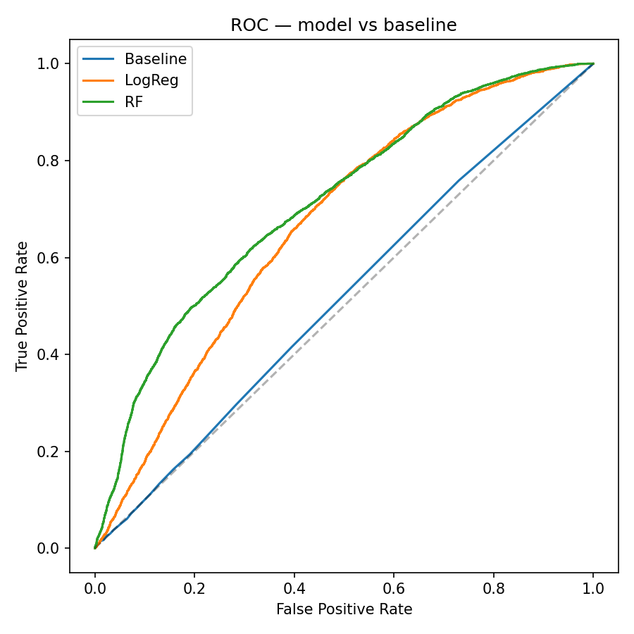
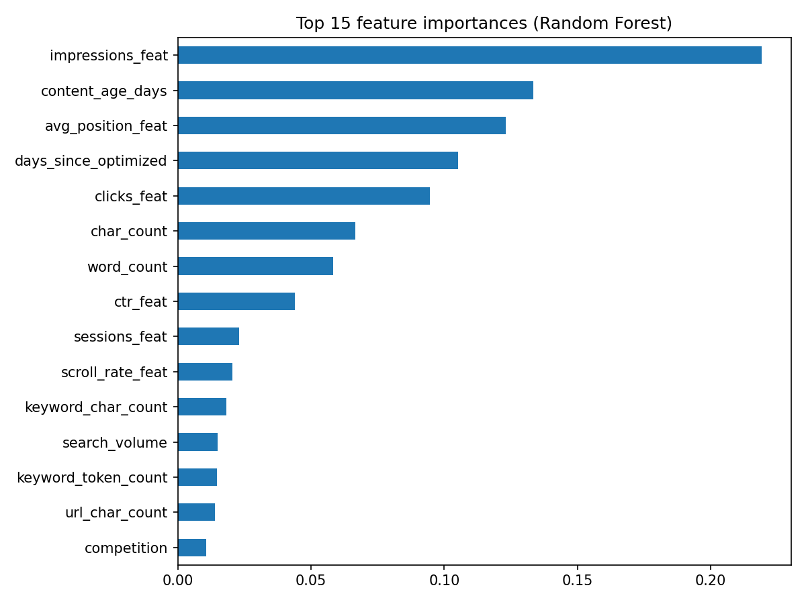

A page-level model for spotting which content is likely to outgrow its own site's baseline over the following quarter, built and validated end to end on FlyRank's search performance warehouse.
Content teams routinely have to decide which of thousands of published pages deserve a promotion push and which don't — usually guessing from raw traffic or gut feel. This study asks whether a page's own search and engagement signals, observed over one quarter, can predict whether it will outperform its site's typical growth in the following quarter. Using three months of FlyRank warehouse data as features, a full untouched buffer month, and the following quarter as an independently computed label, a random forest classifier was validated against a client-grouped holdout split. The model reached a 0.712 ROC-AUC and 0.413 PR-AUC, against a 0.515 and 0.236 baseline that ranks purely by keyword search volume — nearly doubling precision-recall performance. The result is a ranked, three-tier action list rather than a single accuracy number: pages to amplify, pages to monitor, and pages to leave alone.
A content or SEO team managing hundreds or thousands of live pages cannot manually review each one every quarter. Some pages are quietly compounding — climbing positions, picking up more engaged sessions, worth a deliberate push. Most are flat. A smaller number are fading and might need a rewrite or a prune, but that is a different question from this one. This work is scoped narrowly: given what's already true about a page as of today, which ones are the best bets for active amplification — internal linking, promotion, distribution — over the next quarter, relative to how that specific site's content typically performs.
That last clause matters. A page growing 40% alongside a client whose entire site is growing 40% has told you nothing about the page itself. The label in this study is defined relative to each client's own median, so the model is forced to find page-level signal rather than restating site-wide momentum.
All data comes from the FlyRank ML Internship warehouse release, accessed as Parquet tables. Three tables were used:
| Table | Role | Window used |
|---|---|---|
| fact_content_daily_performance | Daily GSC + GA4 metrics per page, partitioned monthly, Jan 2025 – Jun 2026 | Sep 1 2025 – Mar 31 2026 |
| dim_content | Static content and keyword attributes (word count, competition, content type, dates) | Snapshot, no date window |
| dim_clients | Client status flags, used only to filter to active clients | Snapshot, no date window |
Everything is joined and reported on hashed client and content identifiers only. No client name, domain, URL, query text, or credential appears anywhere downstream of the raw warehouse.
Excluded, deliberately:
The core risk in any "will this grow" model is leakage — letting information from the future, directly or by proxy, into the features. Two independent separations guard against it here:
Every feature is aggregated only from Sep 1 – Dec 1, 2025. December 2025 is a full calendar month touched by nothing in this study. The label is computed only from Jan 1 – Apr 1, 2026, strictly after that buffer. A query against the raw daily table confirms the two date ranges never overlap before any modeling begins.
Train and test are split by client_hash_id using a grouped shuffle split, so no single client's pages appear on both sides. This guards against the model simply memorizing a client's typical traffic level rather than learning transferable page-level patterns.
Raw quarter-over-quarter impression growth turned out to be almost useless as a label on its own: three-quarters of all pages showed some positive growth, mostly because whole sites were trending upward together over this period. The label used here instead measures each page's growth relative to its own client's median growth in the same window — isolating pages that outperformed their peers on the same site, not ones that simply rode a site-wide tide. The top 30% of pages by this relative measure are labeled as growth candidates.
Features come only from the Sep–Nov window: impressions, clicks, click-through rate, average position, sessions, engagement rate, AI-referral share, scroll rate, plus static content attributes — word count, character count, content age, days since last optimization, search volume, competition, keyword length, content type, and search intent. The baseline is the simplest thing a team might already do without any model: rank pages by keyword search volume alone.
PR-AUC tells a similar story and matters more here given the 30/70 class split: baseline 0.236, logistic regression 0.325, random forest 0.413 — nearly double the baseline's precision-recall performance across all thresholds.


The model finds association between a page's Sep–Nov signals and its relative performance in Jan–Mar. It does not identify what caused any individual page to grow, and it makes no claim about how Google's ranking systems work.
A 0.712 ROC-AUC is a real, useful lift over the baseline — it is not a page-by-page guarantee. The output is best read as a ranked prioritization, not a yes/no verdict on any single page.
Because feature-window impressions and position are the strongest predictors, the model partly reflects "pages already doing reasonably well tend to keep outperforming their site's median." That's a legitimate and actionable pattern for prioritization, but it means the ranked list should inform a human review, not replace one — especially for pages near the amplify/monitor boundary.
Results reflect one 7-month span across FlyRank's client base as of this dataset release, filtered to active clients and pages with meaningful traffic. Seasonal effects specific to this window, or patterns among very low-traffic pages excluded by the volume floor, are not covered.
Every page in the holdout set gets a random forest growth score and one of three tiers. Tiers are ordered correctly and separate cleanly — amplify-tier pages actually went on to outperform their peers 50.7% of the time, versus 27.8% for monitor and 11.0% for no-action, which is the real test of whether a ranking is useful.
| Tier | Score threshold | Observed outperformance rate | Action |
|---|---|---|---|
| Amplify | score > 0.70 | 50.7% | Invest in promotion, internal linking, and distribution now. |
| Monitor | 0.40 – 0.70 | 27.8% | Moderate signal — revisit at the next quarterly review. |
| No action | score < 0.40 | 11.0% | Low growth probability — leave as-is, or route to a separate decline/refresh review. |